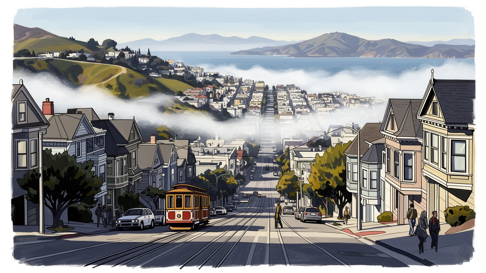
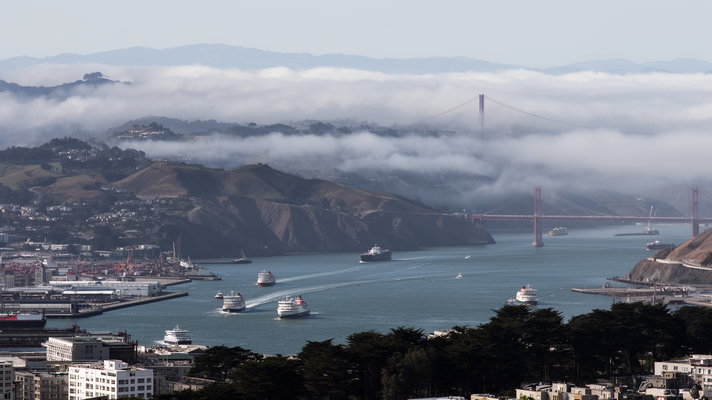
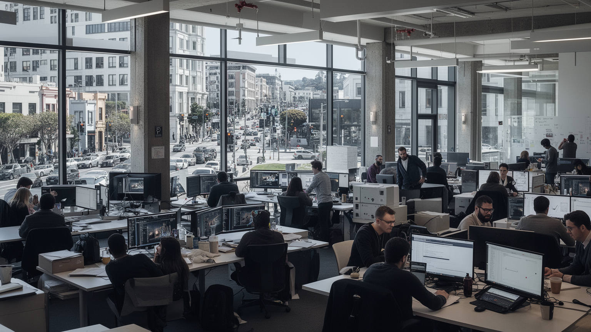
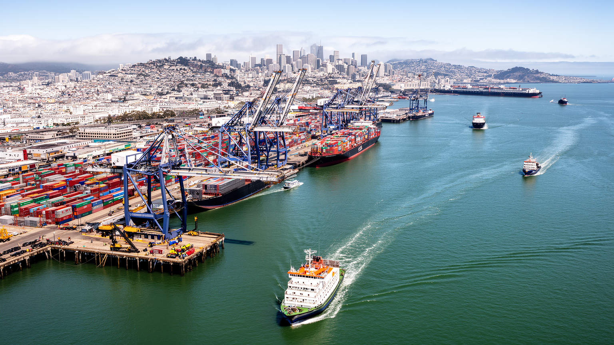
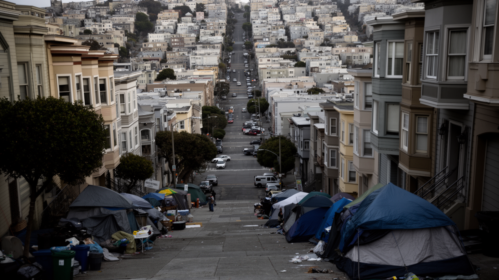
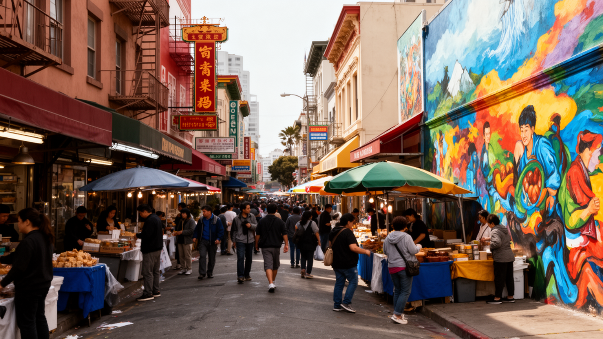
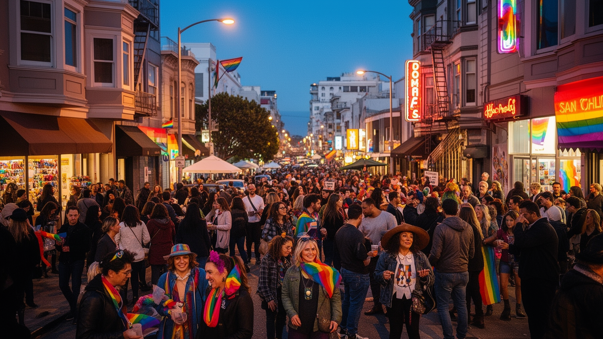
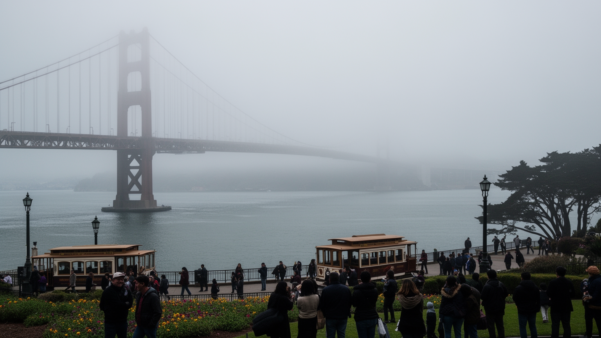
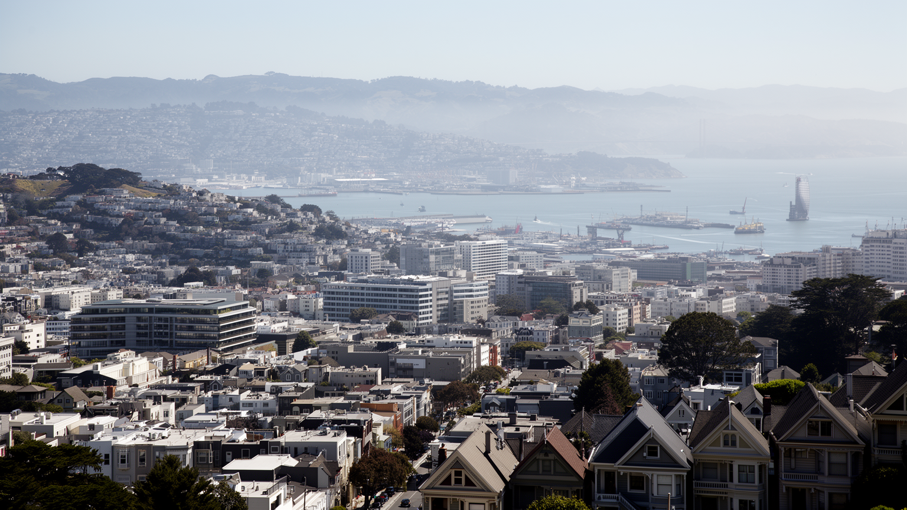

地政学
太平洋と米国西海岸の接点にあり、湾岸の港、空港、大学、金融、アジアとの交流が都市圏を外へ開く。橋と海峡は交通路であると同時に、災害時の弱点にもなる。中国系移民史や太平洋外交の記憶も街に残る要衝だ。

🇺🇸 アメリカ合衆国 / 北米 / World City Atlas
霧の湾岸地形、太平洋港、テック経済、移民地区、住宅危機、LGBTQ文化、観光名所が重なる北米西海岸の都市。
都市の骨格
太平洋、湾、丘陵、断層、橋、鉄道、港が、狭い半島の都市に高い価値と深い緊張を同時に集める。

太平洋と米国西海岸の接点にあり、湾岸の港、空港、大学、金融、アジアとの交流が都市圏を外へ開く。橋と海峡は交通路であると同時に、災害時の弱点にもなる。中国系移民史や太平洋外交の記憶も街に残る要衝だ。
ソフトウェア、AI、ベンチャー投資、金融、医療研究、観光が高い所得を生む一方、清掃、飲食、介護、配送、建設の労働が都市を支える。高賃金職とサービス職の距離が近く、生活費の重さが通勤圏を広げている問題だ。
チャイナタウン、ミッション、カストロ、教会、寺院、シナゴーグ、モスク、無宗教の市民文化が近接し、移民と性的少数者の可視性を育てた。祭り、壁画、食、音楽、抗議行動が公共空間を多声的なものにする場でもある。
坂道、霧、ケーブルカー、湾岸散歩、ビクトリアン住宅、橋の眺めは観光の核だが、住民には家賃、ホームレス、治安感覚、交通費が日常の現実である。名所の美しさと生活の不安が同じ通りで見える都市の深い現実だ。

サンフランシスコは広い平野に伸びる都市ではなく、太平洋へ突き出した半島の先端、湾口の狭い地形に詰め込まれた都市である。西には冷たい海流、東にはサンフランシスコ湾、北には金門海峡、周囲には丘陵と断層があり、地形そのものが都市の密度、眺望、交通、気候、住宅価格を決めてきた。夏でも霧が流れ込み、丘を越えるだけで日差しや風の感じ方が変わるため、街区ごとに体感する都市が違う。ゴールデンゲート橋とベイブリッジは名所であるだけでなく、北湾、東湾、半島、シリコンバレーを結ぶ生命線である。だが橋と海峡に依存する構造は、地震、火災、交通事故、通勤混雑の弱点にもなる。港、フェリー、鉄道、空港、ハイウェイが湾岸の複数都市を結び、サンフランシスコ単体ではなく、オークランド、バークリー、サンノゼを含む都市圏として機能する。狭い市域に世界的な企業、観光地、住宅、福祉施設、移民地区が重なるため、土地の希少性は強い政治問題になる。美しい地形は都市の魅力であると同時に、誰がその眺望と交通の近さを買えるのかを問う条件でもある。また、湾を囲む自治体ごとに税収、学校、警察、住宅政策が分かれるため、同じ経済圏で働いても受ける公共サービスは異なる。地形の美しさは行政境界を越えるが、負担の分け方は政治の交渉として残る。通勤者は毎日その差を渡る。

サンフランシスコの経済は、シリコンバレーそのものとは少し違う。半導体工場や郊外キャンパスの集積というより、ソフトウェア、AI、クラウド、金融、デザイン、法律、広告、ベンチャー投資、大学研究、医療、観光が高密度に交差する都市型の知識経済である。ダウンタウンの高層ビル、サウス・オブ・マーケットのオフィス、共同作業空間、大学病院、投資家の会議室、カフェは、資金と人材とアイデアが短い距離で出会う場になった。成功した企業は世界の働き方や情報流通を変えるが、その利益は都市の住宅市場と労働市場にも強く影響する。高い報酬を得る技術者や経営者がいる一方、オフィス清掃、警備、飲食、配送、介護、保育、ホテル、公共交通の労働者は、同じ都市を支えながら遠い郊外から通うことが多い。リモートワークの拡大や景気循環は中心業務地区の空室、税収、小売、治安感覚にも波及した。サンフランシスコをテック都市として読むなら、発明や投資だけでなく、株式報酬、解雇、移民ビザ、労働組合、都市財政、低賃金サービスの条件を一緒に見る必要がある。革新の速さは都市の誇りであるが、その速度に住まいと公共制度が追いつくかどうかが、街の持続性を左右する。企業の成長は市税や寄付を増やすが、景気が冷えれば店舗、文化施設、公共サービスにすぐ影響する。都市経済の華やかさは、循環の弱さも抱えている。

サンフランシスコは現在、コンテナ物流の中心をオークランド港など湾岸の別地点へ譲っているが、太平洋港としての歴史は都市の性格を深く形づくっている。ゴールドラッシュ期の急成長、アジアとの航路、中国系移民の到着、軍事と造船、倉庫街、フェリー、魚市場、労働争議は、海に向いた都市の記憶である。港は商品だけでなく、人、病気、宗教、料理、新聞、労働運動、差別的な移民政策も運んだ。エンバーカデロの再生やフェリービルの人気は水辺を観光と公共空間へ戻したが、きれいに整った岸辺の背後には、港湾労働、倉庫、冷蔵物流、清掃、警備、交通管理がある。湾岸はまた軍事的にも重要で、太平洋戦争、冷戦、海軍施設、退役軍人、反戦運動の記憶を抱える。港町としてのサンフランシスコは、自由で国際的な雰囲気だけでは語れない。排除と受け入れ、商業と労働、観光とインフラが同じ水際で重なってきたからである。今日の都市がAIや金融で知られるとしても、太平洋に面した港の歴史を抜きにすれば、チャイナタウン、フィリピン系コミュニティ、海沿いの倉庫地区、フェリー通勤、観光の眺めがなぜここにあるのかは見えない。湾を渡る風は、都市が常に外部とつながってきたことを思い出させる。古い桟橋の再利用や水辺の市場は、港湾機能が衰えた後も都市が海との関係を更新している証拠である。港の記憶は観光の背景ではなく、働く都市の骨格である。

サンフランシスコの住宅問題は、単なる家賃の高さではなく、都市の社会構造を変える力を持つ。狭い市域、地形の制約、厳しい建築規制、地域ごとの反対運動、歴史的住宅の保存、テック経済による高所得需要、投資資金、短期賃貸、公共住宅の不足が絡み合い、住みたい人と住める人の差を広げてきた。ビクトリアン住宅や坂の街並みは観光資源であり住民の誇りでもあるが、保全が新しい住戸供給を難しくする場合もある。家賃が上がれば、教師、看護師、店員、料理人、芸術家、若い家族、移民労働者は遠い郊外へ移り、長い通勤を受け入れざるを得ない。路上生活や薬物依存、精神医療、治安への不安は、住宅の不足と福祉の制度不全に結びついている。歩道に見える苦境を個人の問題だけに還元すれば、都市が作った構造は見えなくなる。サンフランシスコの自由な文化は、多様な人が近い距離で暮らせたことから生まれた。住宅が富裕層だけの資産になれば、その文化を支えた層が押し出される。新築、家賃保護、ホームレス支援、公共交通、近隣の合意形成を一体で考えなければ、街は美しい景観を保ちながら、働く人を失うことになる。住宅は都市の倫理を測る最も具体的な指標である。空き室の使い方、容積率、州政府との権限争い、保護すべき歴史景観の範囲も争点になる。住まいを増やす議論は、地域の記憶と排除の歴史をどう扱うかという議論でもある。

サンフランシスコの移民地区は、観光用の異国情緒ではなく、労働、差別、家族、信仰、商売、政治参加の歴史を背負っている。チャイナタウンは北米で最も古い中国系コミュニティの一つで、排華法、隔離、火災後の再建、観光化、住民の高齢化を経験しながら、食品店、会館、寺院、学校、新聞、祭りを通じて生活圏を守ってきた。ミッション地区ではラテン系住民、壁画、カトリック信仰、労働者文化、移民支援が街の色をつくり、ジェントリフィケーションへの抵抗も続く。ジャパンタウン、フィリピン系の歴史、ロシアンヒル周辺の名残、黒人コミュニティの移動も、湾岸都市の多層性を示す。移民の店や料理は都市の魅力として消費されやすいが、その背後には言語支援、在留資格、家賃、学校、医療、警察との関係、世代間の文化継承がある。新しい高所得者が地区へ入ると、古い商店や教会、家族経営の食堂は賃料に押される。多様性を都市ブランドとして掲げるだけでは十分ではない。地区の記憶を保つには、住民が実際に住み続け、子どもが通学し、高齢者が買い物し、祭りが通りを使える条件が必要である。サンフランシスコの国際性は、港から来た人々が街区を作り直してきた日常の積み重ねにある。観光客が門や壁画を眺める時間の隣で、家族は送金、通訳、店の家賃、学校選びに向き合う。その生活の継続こそが地区の本体である。

サンフランシスコはLGBTQコミュニティの可視性と権利運動を語るうえで欠かせない都市である。カストロ地区は、単なる夜の娯楽街ではなく、性的少数者が住み、働き、政治を語り、互いを守る場所として育った。ハーヴェイ・ミルクの記憶、市政への参加、パレード、バー、書店、劇場、保健活動は、個人のアイデンティティを公共の権利へ押し上げた。HIV/AIDS危機はこの都市に深い喪失をもたらし、同時に医療、追悼、ケア、活動家ネットワークの重要性を示した。今日、同性婚や多様な性の表現は以前より広く認められているが、差別、トランスジェンダーへの攻撃、住宅難、高齢化、若者の居場所、医療アクセスはなお課題である。サンフランシスコのLGBTQ文化は、観光客が虹色の旗を見るだけでは理解できない。安全に手をつなげる通り、選挙に立候補できる制度、病気の友人を看取った共同体、警察や雇用主に抗議した歴史が重なっている。都市の自由は抽象的な雰囲気ではなく、具体的な権利、医療、住まい、記憶の場によって守られる。カストロの可視性は世界中の人に希望を与えたが、その象徴性を持続させるには、商業化の中でも当事者の生活と政治的な声を中心に置く必要がある。祝祭と哀悼が同じ街路にあることが、この都市文化の強さである。観光の明るさの下に、ケアと政治の長い努力が続いている。
サンフランシスコの移動は、地図で見る距離より体感の高低差に左右される。急な坂、狭い街路、一方通行、霧、海風は、徒歩、自転車、バス、ケーブルカー、路面電車、地下鉄、ライドシェアの使い方を変える。ケーブルカーは観光名物だが、坂の都市が機械の力を必要とした歴史を示す交通でもある。Muniのバスと路面電車、BART、Caltrain、フェリーは、市内、東湾、半島、空港、シリコンバレーを結び、住宅費の高い中心から遠く住む人の通勤を支える。だが乗換、運賃、治安感覚、遅延、車いすやベビーカーの利用しやすさは、都市の公平さを具体的に左右する。車を持たずに暮らせる地区がある一方、郊外から働きに来る人には長距離通勤が重い負担になる。坂道の美しい景色は、配送員、介護職、清掃員、観光客、高齢者にとっては別々の意味を持つ。自転車道や歩行者空間の整備は気候対策にもなるが、商店の荷さばきや障害者の移動と調整が必要である。サンフランシスコの交通を読むことは、名物の乗り物を見るだけでなく、地形の厳しさを誰が時間と身体で負担しているのかを考えることである。湾岸都市圏の自由は、橋と鉄道と徒歩の細部に支えられている。駅前のエレベーター、夜間バス、雨の日の歩道、急坂の配達経路まで含めて、移動は都市の福祉である。眺めのよい坂は、使いやすい道であって初めて公共の資産になる。

サンフランシスコ観光は、ゴールデンゲート橋、アルカトラズ島、フィッシャーマンズワーフ、ケーブルカー、ロンバードストリート、チャイナタウン、ミッションの壁画、ゴールデンゲートパーク、フェリービル、湾の眺めを結ぶ。これらの名所は短い滞在でも強い印象を与えるが、都市の見方を観光名所だけに閉じると、生活の複雑さは見えにくい。アルカトラズは監獄の物語だけでなく、先住民占拠運動の記憶も持つ。橋は美しい写真の背景であると同時に、労働、建設技術、自殺予防、通勤、地震対策の対象である。フィッシャーマンズワーフの賑わいは観光経済を支えるが、土産物化された水辺と地域の生活との距離も生む。チャイナタウンやミッションを訪れるなら、食や壁画を楽しむだけでなく、移民の歴史と家賃上昇にも目を向けたい。観光業はホテル、飲食、交通、清掃、案内、警備、芸術施設の雇用を生むが、観光客の需要が住民向け商店を押し出す場合もある。サンフランシスコの名所は、自然地形、移民、監禁、労働、抵抗、商業が重なる場所である。写真に残る美しさの背後に、誰がその景観を維持し、誰がそこから利益を得て、誰が追い出されるのかを読むことで、旅は都市理解へ近づく。霧の朝、坂の夕景、湾を渡る船は魅力的だが、歩く速度を落とすほど、名所の間にある生活店や福祉施設、学校、住宅の存在も見えてくる。
サンフランシスコは美しい湾岸都市であると同時に、地震と気候リスクを抱える都市である。1906年の大地震と火災は市街地を破壊し、再建の過程で建築、消防、水道、保険、移民地区の扱いを大きく変えた。現在もサンアンドレアス断層やヘイワード断層の活動は都市圏全体のリスクであり、古い住宅、埋立地、高層ビル、橋、地下鉄、港湾、病院、学校の耐震性が問われる。湾岸の埋立地では液状化の危険があり、海面上昇や高潮は水辺の再開発地、道路、下水、フェリー施設へ影響する。霧は夏の暑さを和らげるが、気候変動で熱波や山火事の煙が増えれば、屋外労働者、高齢者、路上生活者、換気の悪い住宅に住む人ほど負担を受ける。防災は技術だけではない。避難情報の多言語化、低所得者の住宅補強、保険の利用可能性、停電時の医療、ペットや障害者への支援、地域の相互扶助が欠かせない。富裕な都市ほど災害に強いとは限らず、格差が大きいほど復旧の速度は住民ごとに分かれる。サンフランシスコの景観を支える丘と湾は、同時に都市を試す自然条件でもある。次の災害に備えることは、過去の火災を記念するだけでなく、誰も置き去りにしない都市制度を作ることである。耐震改修の費用を誰が負担するのか、保険に入れない世帯をどう守るのかも重要である。災害への備えは、裕福な地区だけの安心で終わってはならない。

サンフランシスコを読むには、橋やテック企業だけでなく、湾、丘、霧、港、移民地区、LGBTQ文化、住宅危機、ホームレス、地震、観光、公共交通を同じ地図に置く必要がある。世界的なソフトウェア企業や投資家は都市に富と知名度をもたらしたが、その富は家賃と地価を押し上げ、街を支える多くの労働者を遠ざけた。チャイナタウンやミッション、カストロは多様性の象徴として観光される一方、住民は賃料、差別、商業化、世代交代に向き合っている。坂道から見る湾の美しさは圧倒的だが、その景色は土地の希少性、災害リスク、交通の制約と切り離せない。サンフランシスコの強さは、外から来た人々が新しい技術、政治、表現、信仰、食、権利運動を持ち込み、狭い都市空間で衝突しながら公共文化を作ってきた点にある。弱さは、その自由を可能にした住まいと余白を市場が急速に狭めている点である。都市の未来は、AIや金融の成長だけで決まらない。教師、看護師、清掃員、移民高齢者、路上にいる人、若い創作者、性的少数者が安全に暮らし続けられるかで決まる。革新の都市であり続けるには、発明だけでなく、住まい、ケア、移動、記憶を守る政治が必要である。その政治は市役所の議論だけでなく、地区の会合、労働現場、病院、学校、路上支援の場で毎日試される。都市を読む視線も、名所から生活へ広げる必要がある。